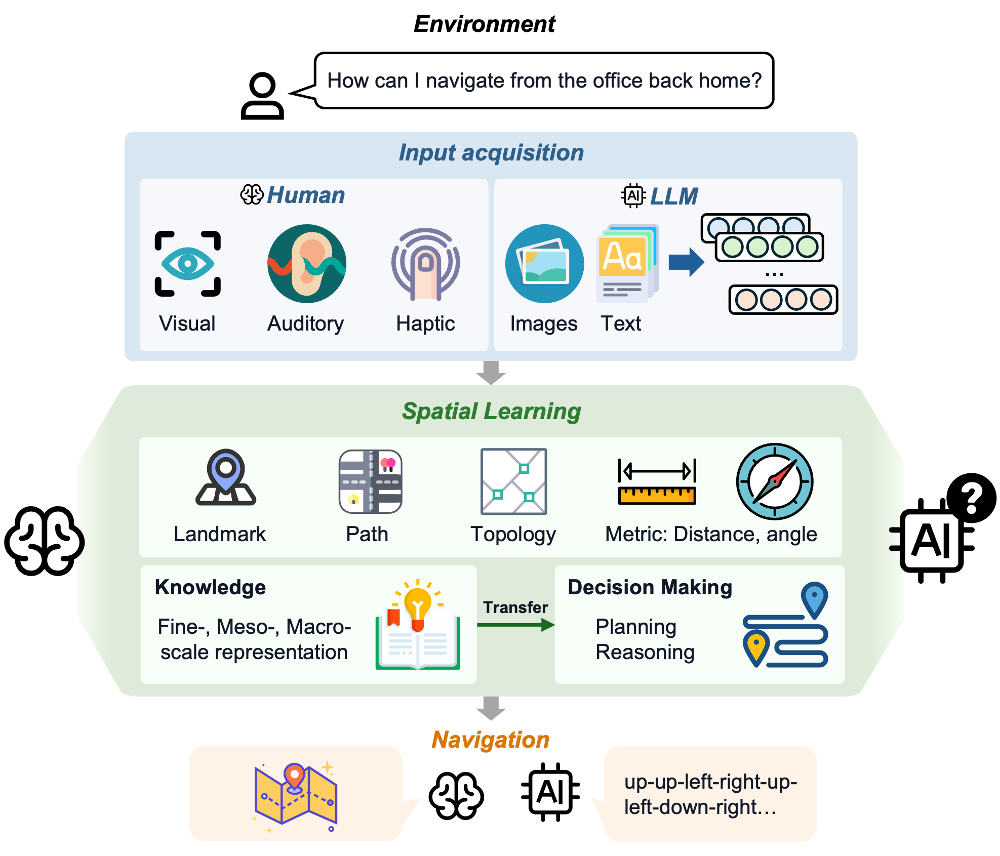
Large language models (LLMs) are increasingly deployed as planners and assistants in tasks with inherent spatial structure, such as navigation and route planning, yet they remain brittle in sequential spatial reasoning. We ask not merely whether LLMs fail at navigation but where in the spatial-cognition pipeline they get lost.
We introduce a multi-scale diagnostic benchmark that decomposes maze navigation into three cognitive levels drawn from human spatial cognition: Fine (local passability), Meso (junction topology), and Macro (global goal direction). We evaluate three instruction-tuned chat LLMs (GPT-4o, DeepSeek-V3, Llama-3.3-70B) on 1,050 topology-annotated mazes spanning seven sizes (3×3 to 30×30) and three difficulty tiers.
The central finding: end-to-end one-shot navigation collapses to near zero by 10×10 for every model, yet the same models answer isolated single-level probes at 30–75% far beyond that size. A multi-hot first-error analysis localizes failures to Meso junction choices (59%) and Fine perception (39%), with global direction almost never at fault (1%). The barrier is the cross-scale aggregation of individually available competences over a long sequential plan — not any single perceptual deficit.
The benchmark mirrors the navigation pipeline: how space is read in, how it is represented across scales, and how control should be divided between an LLM and an algorithm.
Among four input formats, structured coordinate text is the most navigable (mean SR 0.34) — far ahead of rendered images (0.07). Local moves stay legal even as whole-path success vanishes, so the collapse is one of global path assembly.
Isolated Fine / Meso / Macro probes survive far past where navigation collapses. First errors fall on Meso (59%) and Fine (39%), almost never Macro (1%). The deficit is cross-scale aggregation, not perception.
Handing per-step execution to a deterministic walker and querying the LLM only at junctions lifts GPT-4o by up to 92 points at mid sizes — but the same scaling wall re-emerges by 30×30.
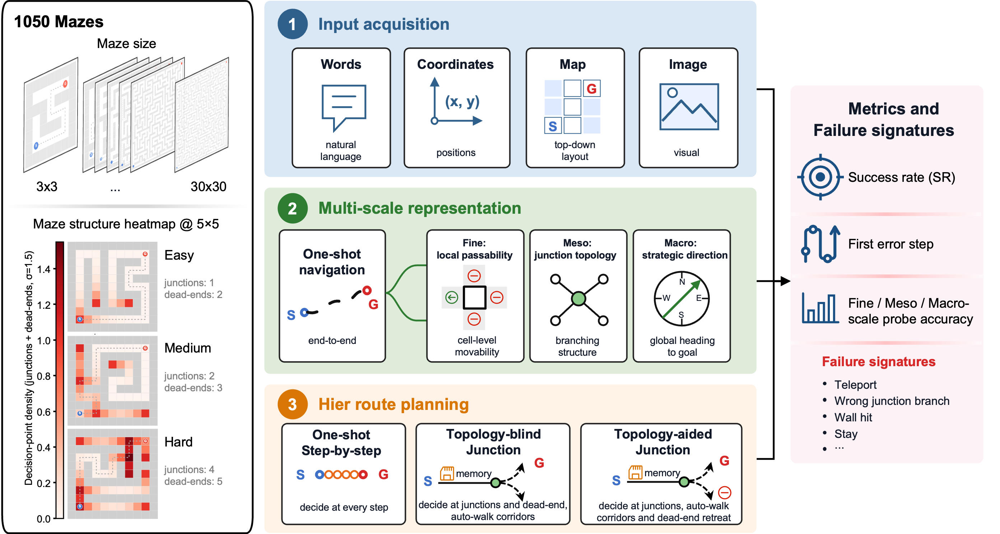
Mazes are 2-D grids generated by a mix of depth-first-search (long corridors) and randomized Prim (many branches), with fixed seeds for reproducibility. By construction they are trees: any two cells are connected by a unique path, so every junction choice is unambiguously right or wrong. Every maze ships with per-cell passable directions, cell types, the shortest path, and the goal-reaching branch at each junction.
Effective (open-cell) widths of 3, 5, 7, 10, 15, 20, and 30. Each thumbnail shows a representative medium-difficulty maze with its start (S), goal (G), and unique solution path.
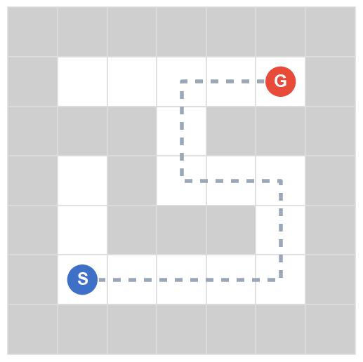
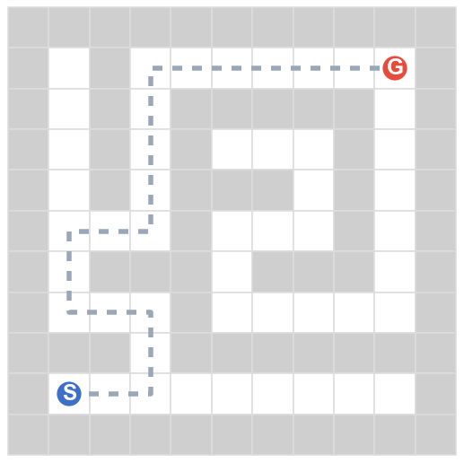
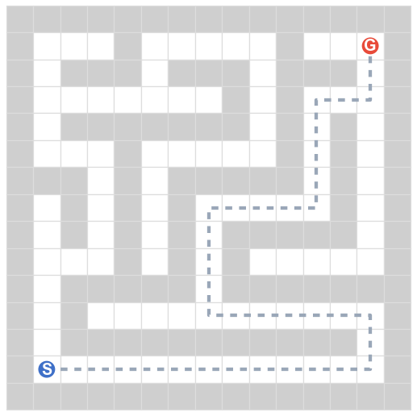
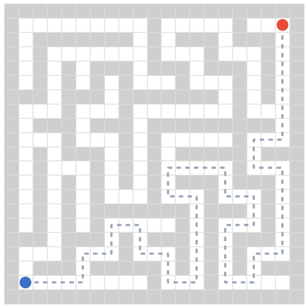
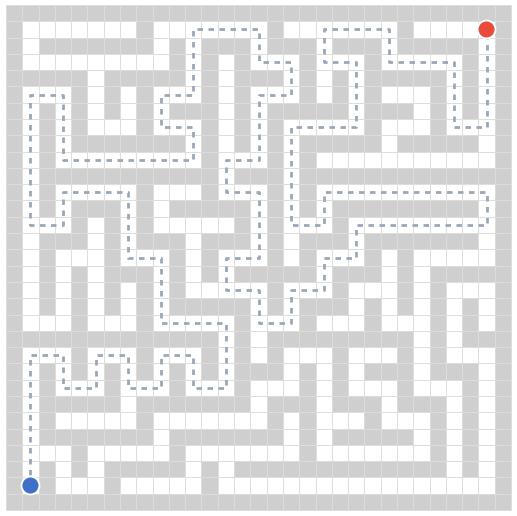
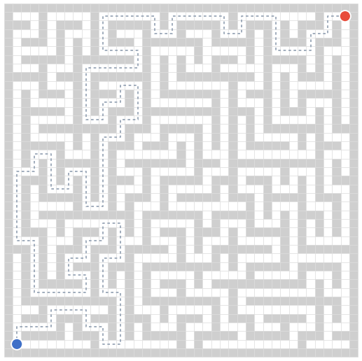
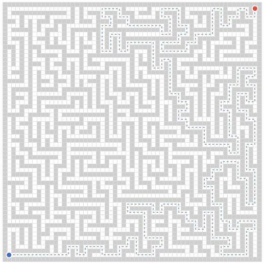
The base map is a decision-point density heatmap: path cells darken (white → deep red) where junctions and dead-ends cluster — the spots where a navigator must choose. The grey dashed line is the unique correct solution; the robot's blue trail is the route it actually takes.
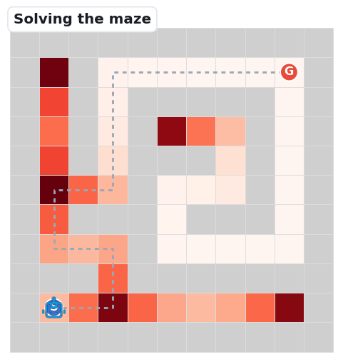
When the robot keeps Fine, Meso, and Macro reasoning aligned step after step, it follows the unique path from S to G. On small mazes the models manage this; the benchmark's question is what breaks as the maze grows.
The three clips below replay the dominant ways navigation falls apart — the same failure signatures our first-error analysis counts: Meso junction choices (59%) and Fine perception (39%).
At a branch point the robot picks a decoy branch (green arrow marks the goal-reaching one) and dies in a dead-end. The single most common first error.
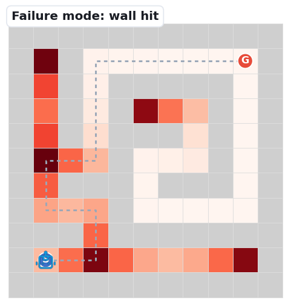
The robot emits a move into a wall cell — a local-passability error. It misreads which neighbours are open.
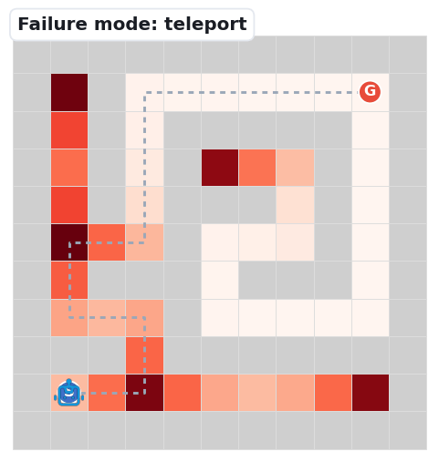
The robot jumps to a non-adjacent cell, losing track of its own position — the most frequent Fine error at larger sizes.
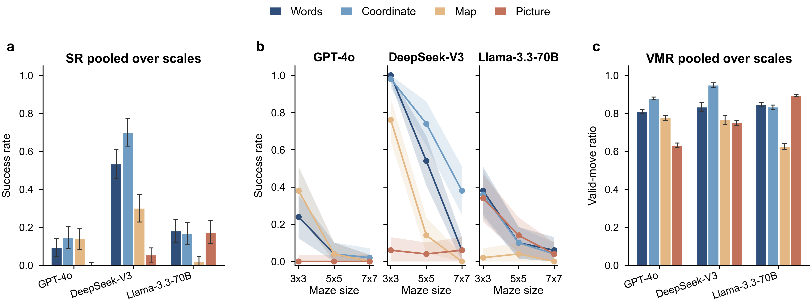
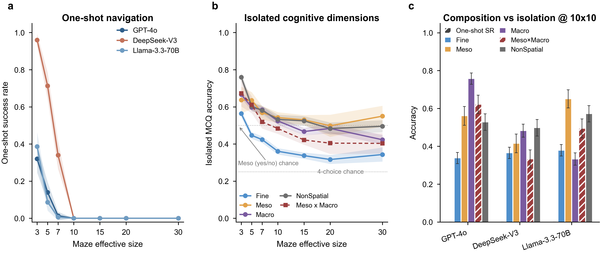
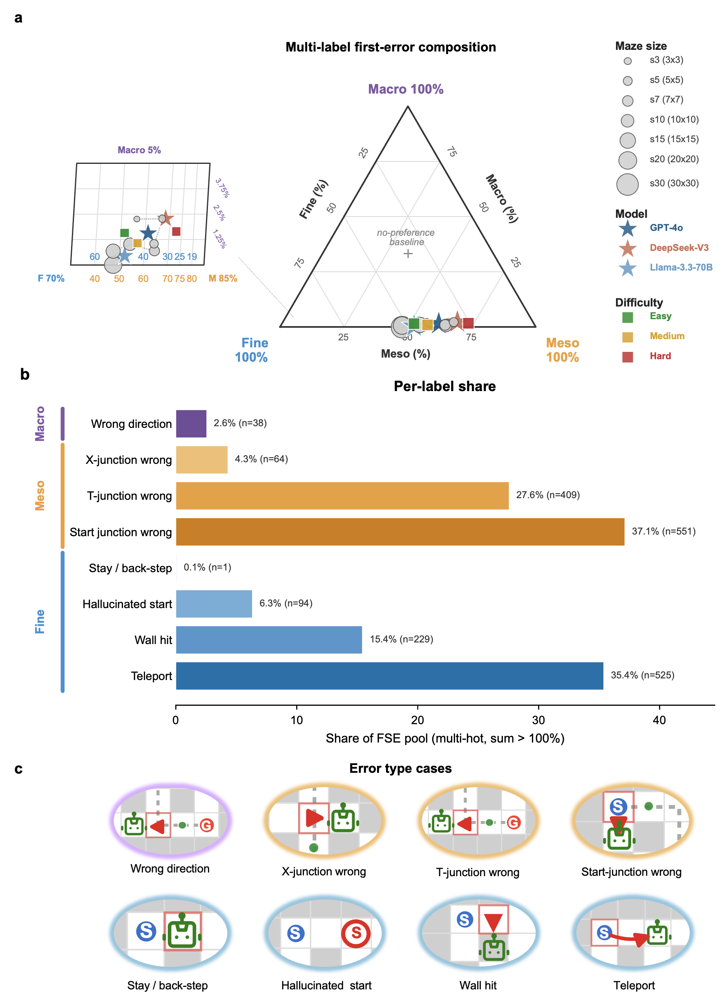
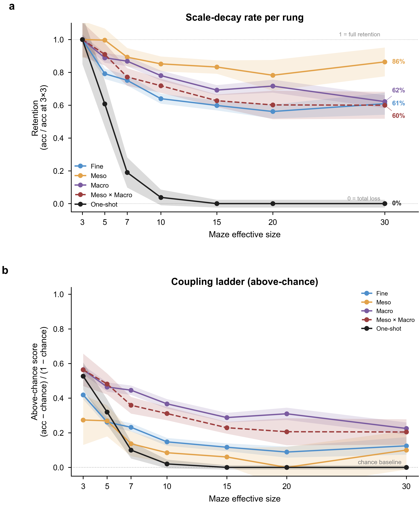
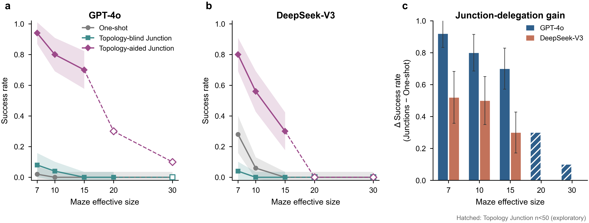
All 1,050 mazes are released as JSON, one file per effective size (150 mazes each: 50 per difficulty tier). Every maze is fully topology-annotated — usable as a drop-in spatial-reasoning benchmark for any model.
| File | Effective size | Mazes | Size | Download |
|---|---|---|---|---|
mazes_s3.json | 3×3 | 150 | 0.7 MB | download |
mazes_s5.json | 5×5 | 150 | 1.7 MB | download |
mazes_s7.json | 7×7 | 150 | 3.2 MB | download |
mazes_s10.json | 10×10 | 150 | 6.3 MB | download |
mazes_s15.json | 15×15 | 150 | 13.5 MB | download |
mazes_s20.json | 20×20 | 150 | 23.4 MB | download |
mazes_s30.json | 30×30 | 150 | 51.2 MB | download |
v0.1). The full corpus is ~100 MB; each file is one effective size (150 mazes: 50 per difficulty tier).
We will release the maze generator, the four input encoders, the isolated-probe generators with answer keys, the junction-delegation harness, and all evaluation and plotting code. The benchmark data is available now.
@misc{jiang2026lostinaggregation,
title = {Lost in Aggregation: A Multi-Scale Diagnostic Benchmark
for LLM Spatial Navigation},
author = {Jiang, Yuhan and Luo, Peng and Meng, Liqiu},
year = {2026},
note = {Preprint, under review},
howpublished = {\url{https://yuhanjiang415.github.io/lost-in-aggregation/}}
}